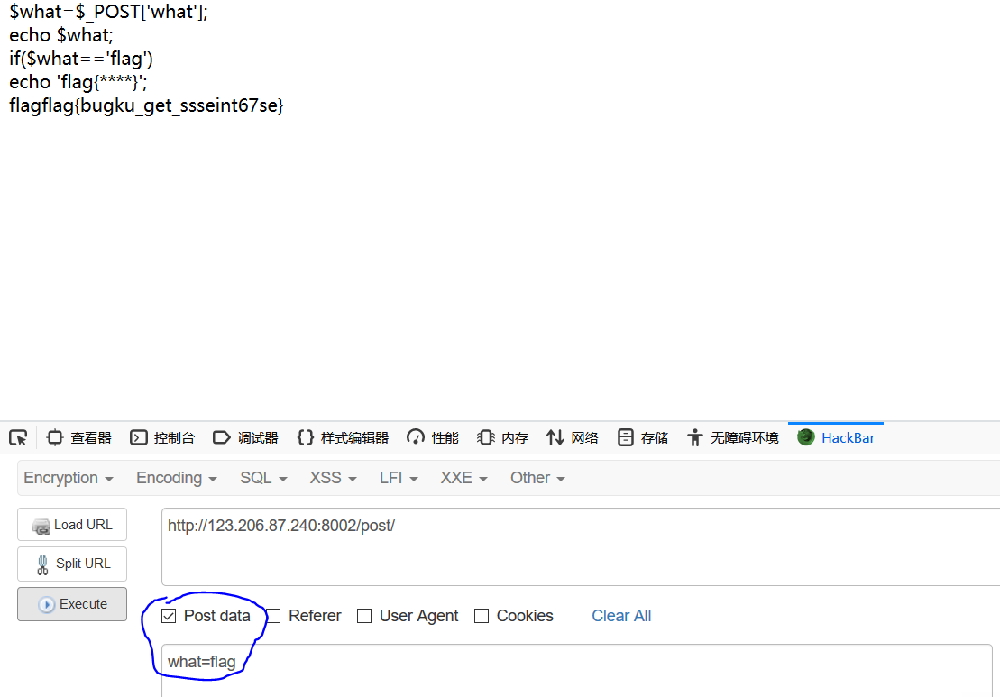

0x00 介绍
开始做一些CTF题目了。打算在高职比赛玩玩CTFxD
地址:https://ctf.bugku.com/challenges
-
WEB篇
[
web2]这种类型直接看源码 F12或者Ctrl+U
[计算器]------------------------------------------------------
试着算出来,然后发现只能输入一位数，就能猜测到他限制了长度，接着我们跑到F12里面去修改即可


[web基础$_GET]------------------------------------------------------
不解释，直接看代码
[web基础$_POST]------------------------------------------------------
也不解释，直接看代码，需要用到抓包软件

[矛盾]------------------------------------------------------
先看代码

问题出现在 is_numeric 这个函数,is_numeric 是判断 传入的字符串是否为数字。如果是则不输出,不是则输出$num。这个时候我们可以绕过这个函数。
他判断的是数字那么我们给他加点字符串 ?num=1a，则绕过了第一个if判断，并跳到了第二个if判断。
然后他现在直接显示出了flag.

[web3]---------------------------------------------------
他会一直弹窗出来。不知道为什么我的Chrome不会跳出来。
接着我们直接看源码F12 或者 Ctrl+U，发现最下面有一个被注释的html编码
我的方法是，编写到文本，换html格式打开。
解码就出来了.
[域名解析]-------------------------------------------------

修改hosts访问 flag.baidu.com即可.
-
hosts位置
windows：
C:\Windows\System32\drivers\etc
linux:
/etc/hosts
[你必须让他停下来]--------------------------------------------
打开网址发现他一直刷新。二话不说直接上Burpsuite抓包，并放到Repeater(Ctrl+R)。
多Go几遍就能看到flag了

[本地文件包含]--------------------------------------------------
网站进不去。放弃.
[变量1]------------------------------------------------------
先看审计代码，发现最下面有两个$$args

$$ 容易引发变量覆盖
思考。我们直接让他全部值显示出来。使用全局变量$GLOBALS
我们直接给他 全局变量$GLOBALS传参进去,args=GLOBALS
tips:关于全局变量https://www.runoob.com/php/php-superglobals.html

[web5]----------------------------------------------------
输入字符串,啥东西都没有
直接看看源码F12 或者 Ctrl+U
发现这一串看不懂的编码。这种编码是JSFUCK属于一直 加密方式
tips:原理https://blog.csdn.net/qq_36539075/article/details/79946099
直接F12在Console里粘贴
[头等舱]------------------------------------------------------
什么也没有。

在看下头等舱。就能猜测到他flag肯定在 请求头那边，于是直接上抓包软件，并GO一遍看看

拿到flag！
[网站被黑]------------------------------------------------------
打开网站。好炫啊。还会跟着鼠标动，好！偷代码下来了
啥也没提示。直接上御剑扫描找到一个。shell的路径 123.206.87.240:8002/webshell/shell.php
二话不说直接上爆破Burp Suite
输入上去
GET到flag
[管理员系统]------------------------------------------------------
打开发现是一个登入界面。尝试使用SQL万能密码登入

失败了。IP被禁止访问。

于是打开抓包软件在请求头上添加上**X-Forwarded-For 127.0.0.1**
再试试万能密码

密码错误。那么我们来看看源码F12

看到源码中有一个被注释的base64的编码。于是解密出来看是test123那么用户名是**admin密码是test123**
tips:不定时更新。每更新十个题目